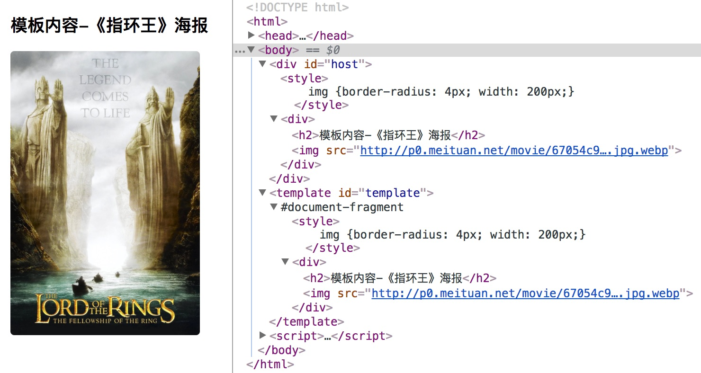

HTML Template
Web Components 规范里的 HTML 模板（HTML Template）是指浏览器新增对标签 <template> 的支持，以便用户能够在其中声明任意的 HTML 片段。
为何需要<template>？
模板最初是服务端技术栈的一部分，例如 PHP，Django，Ruby on Rails，都有各自的模板系统，用于将数据与HTML结构组合为浏览器端可识别的HTML文档。即便是后来的 Node.js，也有不少模板系统可用，例如 nunjucks、esj、jade、handlebars 等等。
目前的技术栈下，后端服务（不包括Node.js这样的视图类后端服务）越来越专注于数据处理，客户端则渐渐地承担更多的用户交互与视图渲染。各类前端 MVC 框架（例如 Angular.js，Backbone.js）都重度使用前端模板进行页面或组件渲染。在没有 <template> 的时候，声明模板有下面3种方式常见方式。
使用 <div> 标签
第一种方式是声明一个不可见的 <div> 标签，将模板放置于其中，如下所示。这个方式有个致命问题：其内部如果有图片、样式、脚本，那么都会被浏览器解析并且按相应规则加载或执行，即使这些资源都还没有用到。
<!-- 模板容器 div 内联样式设为 'display:none' 以避免显示在页面中 -->
<div style="display:none;">
<div>
<h1>Web Components</h1>
<img src="http://webcomponents.org/img/logo.svg">
</div>
</div>
使用 <script> 标签
另外一个办法是使用 <script> 标签并且将其 type 声明为 text/template 而非 text/javascript。
In the following example, the template content is stored inside of a script tag. The down side of this approach is that the templates will be converted into DOM elements using .innerHTML, which could introduce a cross site scripting vulnerability if an adequate sanity check is not performed.
<script type="text/template">
<div>
<h1>Web Components</h1>
<img src="http://webcomponents.org/img/logo.svg">
</div>
</script>
JavaScript字符串
这个大家再也熟悉不过了，就是在 JavaScript 代码里进行大量的字符串拼接，生成 HTML 字符串，然后通过设置 innerHTML 的方式将其注入到 DOM 树中。
示例
下面是一个使用 <template> 编程的示例。
<div id="host">加载中……</div>
<template id="template">
<style>
img {
border-radius: 4px;
width: 200px;
}
</style>
<div>
<h2>模板内容-《指环王》海报</h2>
<img src="http://p0.meituan.net/movie/67054c906fbe38eb3a3131550381b472863767.jpg.webp">
</div>
</template>
<script>
var template = document.querySelector('#template');
setTimeout(function() {
var clonedNode = document.importNode(template.content, true); // ①
var host = document.querySelector('#host');
host.innerHTML = '';
host.appendChild(clonedNode);
}, 2000);
// ② 查看 template 的类型描述
console.log(String(template)); // "[object HTMLTemplateElement]"
console.log(String(template.content)); // "[object DocumentFragment]"
</script>
上面的代码在浏览器中解析执行后，会先显示“加载中……”文字，约2秒后，模板里的内容被插入到主文档里进行渲染。可以看到<style>会对主文档有影响。

① 处用到的 document.importNode() 方法，会接收模板内容节点，然后返回一个该节点的深拷贝（第二个参数 true 表明了要使用深拷贝）。这有点类似于document.createElement()。
② 处我们通过调用 template 和 template.content 的 toString() 原型方法（String(some_object) 的作用就是如此），来查看该对象的字符串描述。可以了解到，模板元素 <template> 继承自 HTMLTemplateElement，而 <template> 的属性 content 则继承自 DocumentFragment（这个类的细节可以参考[2]）。这个细节也可以从 W3C 的接口定义中一窥大概（参考资料[3]）：
// W3C 使用接口定义语言（Interface Definition Laguage，IDL）来描述元素的定义
[Exposed=Window,
HTMLConstructor]
interface HTMLTemplateElement : HTMLElement {
readonly attribute DocumentFragment content;
};
参考模板元素的IDL，我们可以用很简单的方式来判断浏览器是否支持<template>：
function ifSupportTemplate() {
return typeof HTMLTemplateElement === 'function';
}
关于数据绑定
大多数前端 MVC/MVVM 框架的模板都支持数据绑定，对开发非常方便。<template> 则不支持这样的特性，它只是提供了模板内容的隔离而已。
浏览器支持情况
HTML template 是四个子规范中完成最早的，已经是 2014 年发布的 HTML5 标准的一部分。所以到目前，总体来说，<template> 元素在各浏览器中的支持度很不错[4]。除了 IE/Edge，其他的浏览器的近期版本都可以放心地使用 <template> 特性。
| Firefox (Gecko) | Chrome | IE | Safari | Opera |
|---|---|---|---|---|
| 22 | 35 | 均不支持 | 10.1 | 22 |
| Android | iOS Safari | Edge | ||
| 4.4 | 9.2 | 13, 部分支持 |